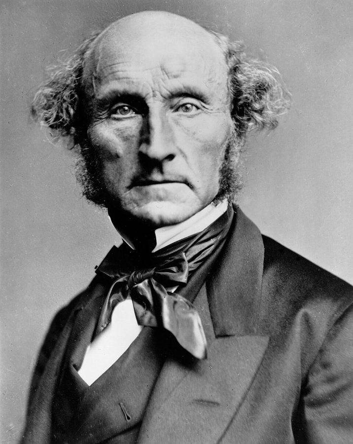

这一页在做什么
第二部从这里开始。前八章讲科学怎样认识因果、随机试验怎样诞生；这一章转身问：社会科学大多做不了实验，它靠回归分析和「自然实验」得出的因果结论，靠得住吗？作者先讲一个总统听三位顾问预测的寓言，再回顾孔德、密尔「不做实验也能找出社会规律」的梦，然后拿两项名气很大的研究开刀：共和党总统是否加剧了收入不平等，堕胎合法化是否减少了犯罪。读的时候抓住一点：作者批评的是工具，不是结论本身。
1945 年 7 月 16 日，美国新墨西哥州 Trinity 试验场，人类第一次核爆炸后 0.016 秒的火球。§1 第 7 段：第一位听到「这样做会炸毁一座城市」这种简报的总统，用核武器之前先花大钱做了一次试验。书里没点名，那位总统是杜鲁门（本站补）。Berlyn Brixner / Los Alamos National Laboratory，公有领域，维基共享资源
读之前：这一页在全书的哪里
第 8 章末尾说，吸烟致癌那样能靠观察数据定案的条件，几乎没有哪场社会政策争论具备（第 8 章第 39 段）。这一章接着走：社会科学多数时候只有观察数据，作者要演示它会栽在哪。开头是第二部的两条题词（见「书里的人、研究和背景」）；§1 第 19 段给出第 10–12 章的路线图：商业里的非实验分析、商业试验、社会政策试验。§2 第一段把前几章的因果密度、整体纠缠、推广难收拢到一起。
这一章说社会科学里多数「自然实验」毛病很重。书出版九年后，2021 年诺贝尔经济学奖恰恰颁给了用自然实验做因果推断的三位经济学家。两边说的并不完全是一回事，见「对照今天」和「本站怎么看」。
做不了实验时，用数据加统计方法「控制其他因素」，能不能可靠地告诉我们一项政策的效果？
读的时候带着这几个问题。不用先找答案，读完回来对照「检查一下理解」。
作者说经济学家的预测更像哪位顾问的？他为什么偏偏挑经济学界「共识最强」的三条来举例？§1
Bartels 的回归里，哪一个看上去很技术的假设一改，效应就不见了？§3
「早合法化五州」合起来看和逐州看，有什么不同？§4
作者说社会科学里多数自然实验有哪几样毛病？堕胎和犯罪这个例子占了几样？§4
这一页的路线
这一章是「先立论，再拿案例演示」的走法。§1 用一个寓言立论：同样是预测，听物理学家的不必争，听历史学家的必须争，经济学家该归哪边？作者先摆出经济学号称最有共识的三条，再用诺奖得主互相唱反调来拆；最后几段突然换成第二部的路线图，读到这里别以为跑题了。§2 是思想史插曲，密尔的「干扰原因」是这一节的钩子，后两节的案例都在演示它。§3、§4 是主体，两个案例结构一样：先讲研究者有多出色，再讲方法，再找出一个可以改的假设。§4 后半从回归转到自然实验，第 69 段起把这个例子推开，讲多数自然实验常见的三样毛病，最后用蝴蝶效应收束。
三位顾问 的寓言
孔德和密尔 的梦
案例一 总统与不平等
案例二 堕胎与犯罪
蝴蝶效应 收束
§1 §2
§3 §4 前大半
第 74–75 段
三条「共识」 第二部路线图
「干扰原因」
回归 滞后几年
回归的拉锯 自然实验的毛病
接第 10 章
两个案例同一个结构：研究者多出色 → 方法 → 改一个假设
本站示意图。浅色底的两格是全章的主体；下面一行是每一站读的时候要留意的东西。 作者落在哪： 不做实验的社会科学，靠回归和这类自然实验，通常建立不了足够可靠、能当政策依据的因果结论；毛病不在研究者不严谨，在人类社会太复杂。所以要认真听社会科学家，但对预测政策后果要极其谦卑。
分节地图
这一页是原书第 9 章的四节，粗体是本站给的节名，下面是原书这一节第一段开头的几个词，在 Kindle 里搜它就能跳过去（原书的小标题也在目录里）。每节标了档：「先读」不读就跟不上全书主线，「有空」好看但跳过不丢线，「可跳过」跳了也不影响后面。读完打个勾。
总统屋里的三位顾问约 1600 词 Imagine that a hypothetical US president … 寓言在前 9 段；第 10–14 段是三条「共识」和诺奖得主的争吵；第 15 段是全章的结论句；第 19 段是第二部路线图。 孔德和密尔的梦约 1200 词 We have seen that as we … 思想史铺垫，第 25–26 段密尔的「干扰原因」最值得看。跳过的话，至少读第 28 段：作者交代自己的立场。 巴特尔斯的六个变量约 1600 词 The first example is a regression … 第 35–36 段六个变量，第 42 段把滞后一年改成两年，第 46 段是这一节的要害。 《魔鬼经济学》的堕胎论约 2400 词 For the second example, consider Freakonomics, … 第 53–58 段回归之争；第 59 段起自然实验，第 69 段起三样毛病；最后两段蝴蝶效应和全章收束。
先用中文过一遍：这一页的概念
先把这一页用到、作者默认你懂的几个概念讲一遍。讲的是概念本身，作者拿它推出什么，读原书时自己看。前面讲过的因果密度 、整体纠缠 、混杂因素和选择偏差 、观察性研究 ，点进去看。
§3 回归分析和控制变量 regression, control variables 回归分析是从数据里估「一个因素变一点，结果平均跟着变多少」的标准办法。最简单的形式，是在散点图上拟合一条离所有点最近的直线，直线的斜率（回归系数）就是估计值；程序员可以把它想成最小二乘拟合。麻烦在于：学得久的学生，往往本来基础就好，直接看斜率，会把「基础好」的功劳也算给「学得久」。办法是把基础也放进方程，这叫控制变量：等于在基础相同的学生之间比学习时长。下图里，斜率从约 5.8 降到约 2.7。论文里说「保持其他因素不变」，就是这个意思。但它只能控制放进方程、量得到的因素；漏掉的、量不准的、彼此纠缠的，照样混在系数里（第 10 章下半页的遗漏变量偏差 细讲）。系数本身说的是相关，能不能读成因果，全看这些假设。
0 2 4 6 8 10
每周学习小时
50 70 90
分数
基础好的学生
基础差的学生
不分基础：斜率约 5.8
控制基础：斜率约 2.7
本站编的数据。虚线把两群学生混在一起拟合，「每多学 1 小时多 5.8 分」里有一半多是基础的功劳；两条实线是在同一基础的学生内部比，才更接近学习时长本身的作用。 在这一页： §3 第 35–36 段 Bartels 用六个变量的回归，§4 第 53 段 Donohue 和 Levitt 的回归，都想靠它「保持其他因素不变」。
§3 模型设定和稳健性 specification, robustness 同一批数据，回归方程可以有很多种写法：放哪些控制变量；原因和结果之间隔几年（滞后，lag）；用不用趋势项，也就是拿「第几年」和它的平方去描出长期走势，而不去解释走势的原因；数据怎么定义、怎么清洗。这一整套选择叫模型设定。换一个同样说得通的设定，结论基本不变，就说结果稳健（robust）；一换就变，就说它脆弱。经济学家 Edward Leamer 1983 年有篇名文，题目叫《把骗术从计量经济学里拿掉》，批评的正是这件事：研究者往往试过很多种设定，只报告其中一种，读者无从知道结论有多脆弱。今天常见的做法是把多种设定的结果一起报出来（稳健性检验）。程序员可以这样类比：一个性能测试，换台机器、换个编译选项结果就反过来，你不会信它。
在这一页： §3 第 38–47 段争滞后几年、用不用趋势项；§4 第 54–57 段争用谁偏好的设定，英国的复现说结果很少是稳健的。
§4 自然实验 natural experiment 研究者没法安排谁接受一项政策，但现实碰巧做了近似的安排：有的州先改法、有的后改，有的地方碰上了政策、隔壁没碰上。拿这种碰巧的分组当试验来比，就叫自然实验。经济学里最常用的算法叫双重差分（difference-in-differences）：先看两边在政策前后各变了多少，再把两个变化相减。它靠一个关键假设：要是没有这项政策，两边本来会走一样的趋势（平行趋势）。有名的例子是 Card 和 Krueger 1994 年的研究：新泽西州 1992 年提高了最低工资，隔壁宾夕法尼亚州没提，他们比较两边快餐店就业的变化。它和随机试验的根本差别是分组不靠抽签：两边可能本来就在别的方面不同（选择偏差），人也可能在两边之间流动。第 5 章天文学里说的自然实验是另一种用法，见历史科学 。
在这一页： §1 第 8 段说「有些」宏观事件被叫作自然实验；§4 第 59–73 段拆「早合法化五州」这个自然实验。
书里的人、研究和背景
按在书里出现的顺序排，标题前是节号。只讲到读懂这一页需要的程度。
§1 第二部的两条题词
Ernest Rutherford（1871–1937），1919 年前后的照片。Agence Rol，公有领域，维基共享资源
第二部开头有两条题词。一条常被归在物理学家 Rutherford 名下（他生在新西兰，在英国做出了原子核的发现），大意是：实验要靠统计才看得出结果，说明你该做一个更好的实验。另一条出自亚里士多德的《尼各马可伦理学》，大意是：受过教育的人，对每一类事物只追求它的本性所容许的精确。两条摆在一起，正是这一部的两难：物理学家可以嫌弃统计，社会科学离不开它；而社会问题本来就给不出物理那样的精确。
§1 白宫的经济学家和三场争论白宫有一个经济顾问委员会（Council of Economic Advisers），由总统任命的经济学家组成，Mankiw 当过它的主席。他在教科书里列了十四条「经济学家大多同意」的命题，作者挑了三条：财政刺激在经济不景气时有明显效果；巨额联邦赤字对经济有害；最低工资会增加年轻、低技能工人的失业。这三条正对着作者写书时最热的三场争论：2009 年 2 月通过的约 7870 亿美元刺激法案（书里说「一万亿」是概数），奥巴马任内的赤字之争，以及最低工资。第 14 段几位诺奖得主的交锋，书后注释给的出处是报纸文章和博客。
N. Gregory Mankiw 1958– 哈佛大学经济学教授，畅销经济学教科书的作者，2003–2005 年任小布什总统的经济顾问委员会主席。
§2 孔德、密尔和「社会物理学」的梦
John Stuart Mill，约 1870 年。London Stereoscopic Company，公有领域，维基共享资源 孔德认为人类的认识要走过神学、形而上学、「实证」三个阶段，「社会学」这个词就是他造的。密尔把孔德的实证主义介绍给英语读者，自己也写过经济学的方法论：社会科学做不了实验，可以从内省推出规律，再拿实际发生的事去核对，对不上的部分归给「干扰原因」。书后注释里，这一段引的是 Hayek 的《科学的反革命》，Hayek 在导言里出现过。
Auguste Comte 1798–1857 法国哲学家，实证主义的创始人，主张用自然科学的方法研究社会。
John Stuart Mill 1806–1873 英国哲学家、经济学家，《论自由》《政治经济学原理》的作者。在这一页，他代表「不做实验也能有社会科学」的那条路。
§3 Bartels 的回归和「哪一年算谁的」Bartels 的《不平等的民主》（Unequal Democracy，2008）拿 1948–2005 年的数据，说总统的党派是半个世纪来影响美国收入分配最重要的单一因素；2016 年出了增订版。要读懂第 42 段，得先知道美国总统 1 月 20 日交接，所以每一年算在谁头上要定个规则。滞后一年，就是拿上一年在任的总统解释今年的变化。下图是卡特和里根交接前后，滞后一年和滞后两年的区别。第 45 段的两篇论文，一篇是 Blanchard 和 Perotti 2002 年讲税收和政府支出冲击的，一篇是 Christiano 等人 1998 年讲货币政策冲击的。
年份
1977 1978 1979 1980 1981 1982 1983
这一年在任
卡特
卡特
卡特
卡特
里根
里根
里根
滞后一年 记给
福特
卡特
卡特
卡特
卡特
里根
里根
滞后两年 记给
福特
福特
卡特
卡特
卡特
卡特
里根
卡特 1981 年 1 月 20 日卸任。滞后一年，1981 全年仍记给他（框住的那格）；
滞后两年，连 1982 年也记给他。作者说一改成两年，党派效应就不见了。
本站示意图。浅色底是民主党总统，灰底是共和党总统。整个回归的结论，取决于这一行行的「记给谁」。
Larry M. Bartels 美国政治学家，研究舆论、选举和不平等。写书时在普林斯顿大学，后来到了范德堡大学。
§4 Levitt、《魔鬼经济学》和那场论战
Steven Levitt 2012 年在一个科技大会上讲《魔鬼经济学》。Stephen Foskett，CC BY-SA 2.0，维基共享资源
Roe v. Wade 是美国最高法院 1973 年的判决，让堕胎在全国合法（2022 年被最高法院推翻）。在它之前，纽约、加州、阿拉斯加、夏威夷、华盛顿五州已先放开，这就是书里的「早合法化」各州。Donohue 和 Levitt 2001 年的论文说，1990 年代犯罪下降有相当一部分来自这里。第 54 段没点名的「两位美联储经济学家」，是波士顿联储的 Christopher Foote 和 Christopher Goetz（2005 年的工作论文，2008 年正式发表）。第 56 段英国的复现，是 Kahane、Paton 和 Simmons 2008 年的论文。
Steven D. Levitt 1967– 芝加哥大学经济学家，以研究犯罪等题目出名，2003 年获颁给 40 岁以下美国经济学家的克拉克奖。和记者 Stephen Dubner 合写了 2005 年的畅销书《魔鬼经济学》（Freakonomics）。
§4 1990 年代美国的犯罪大降美国的暴力犯罪在 1990 年代初见顶，此后到 2000 年前后大幅下降。原因众说纷纭：警察增多、坐牢的人增多、快克可卡因的泛滥退潮、经济好转，还有堕胎合法化。Levitt 本人 2004 年写过一篇综述，把警察、监禁、快克退潮、堕胎合法化列为能解释下降的四个主要因素。堕胎这一说最出名，也最有争议。书里只谈这一种，读的时候知道它只是候选之一。
§4 Lorenz 和蝴蝶效应Edward Lorenz（1917–2008）是麻省理工学院的气象学家。1961 年他重跑一个简化的天气模型，把一个数从 .506127 输成了 .506，算出来的天气走势完全变了样。这叫「对初始条件敏感」，后来成了混沌理论的起点。「蝴蝶效应」这个名字，来自他 1972 年一次演讲的题目：巴西一只蝴蝶扇翅膀，会不会在得克萨斯引起龙卷风？书里说的是「气候预报模型」，准确说是天气模型，不影响作者的意思。
词与短语
按节排，每节前面是分节地图里的节名。标着「每个字都认识」的，是熟词生义、习语和反话，最容易读错。灰色的那几个字是原句里的位置，在 Kindle 里搜它就能找到。
§1 总统屋里的三位顾问
vis-à-vis
… considering his options vis-à-vis Iran’s …
（法语）针对、关于
字面是「面对面」，英文里多当介词用，比 about 正式。
be irresponsible not to
… Conversely, the president would be incredibly irresponsible …
不……就是失职
这句后面的 not 在书里是斜体：前一句说跟物理学家争是失职，这一句反过来，不跟历史学家争才是失职。斜体的 not 是整个寓言的转折。
As far as I can see
… As far as I can see, with …
在我看来、据我所知
作者给自己留的余地：下面的三类证据是他的归纳，不是公认的分类。
a priori
… (1) a priori beliefs about human …
（拉丁文）先验的，不靠经验观察的
这里指对人性的预设，比如「人是理性的、会对激励作出反应」，经济学从这里往下推。
for all practical purposes
… But for all practical purposes, the …
实际上、就实用而言可以当作
不是「为了所有实际目的」。意思是：理论上不是百分之百，但办事时可以当成定论。
dress up rhetoric in analytical language
… is almost always to dress up rhetoric …
给修辞套上分析的外衣
dress up X in Y：把 X 打扮成 Y 的样子。说的是「有些」宏观事件被叫作自然实验，注意前面的 almost always 和 some of these。
highly credentialed
… find highly credentialed economists who …
资历显赫的
credentials 是学位、头衔、履历这些「凭证」。作者的意思是：同样够格的权威，答案正相反。
I’ve purposely picked
… I’ve purposely picked three example …
我是故意挑的
作者交代挑例子的用意：挑的是号称共识最强的，连这些都靠不住，别的更不用说。这是全节论证的关键一步。
settle an argument
… to really help settle policy arguments …
了结争论
settle 熟词生义：不是「定居」「安顿」，是「解决、了结」，settle a dispute、settle a case 都是这个意思。
fog of uncertainty
… treat the fog of uncertainty about …
不确定性的迷雾
化用军事上的「战争迷雾」（fog of war）：身在其中，看不清全局。
no more … than
… I would no more advise a …
正如不会……一样，也不会……
A no more than B：两件事都不做。这里是说：不找经济学家就做重大经济决策，和不问历史学家就决定战和，作者都不会建议。读成「不再」就反了。
very partially ameliorated
… can be very partially ameliorated through …
只能得到非常有限的改善
very partially 是作者典型的往轻里说：实验有用，但别指望太多。紧接着他又说实验应当大力推行，两句要一起读。
aggressively pursued
… should be aggressively pursued, our …
大力推行
aggressive 在商业英语里常是褒义：积极、力度大，不是「好斗」。
§2 孔德和密尔的梦
shade from … to
… as we shade from physics to …
从……逐渐过渡到
shade 作动词，是颜色一点点变深变浅：从物理到生物到行为，不是跳过去，是渐变。
tactical and strategic generalization
… making both tactical and strategic generalization …
战术上的推广和战略上的推广
这里没解释就用了。第 11 章才讲 strategic generalization：把试验得出的规则和其他知识、判断合在一起，回答「我该怎么做」。
maze of causation
… The maze of causation is now …
因果的迷宫
作者的比喻：原因和结果层层交织，走不出来。
informed common sense
… history is informed common sense …
有见识的常识
informed 不是「被通知了的」，是「有知识依据的、消息灵通的」。作者说历史不是科学，但也不是瞎说。
satellites
… of Europe and its satellites in …
（欧洲的）附属地和文化圈
不是天上的卫星。指受欧洲影响的殖民地和海外地区，比如北美。
somewhat akin to
… In an argument somewhat akin to …
有点类似于
somewhat 是限定：密尔和波普尔的证伪只是「有点像」，作者没说是一回事。
invested in
… those invested in some theory will …
在……上押了宝的、对……有感情投入的
不是投资了钱，是名声、心血都押在这个理论上的人。他们总能为理论的失败找到理由。
severe tests
… Controlled experiments are severe tests …
严格的检验
波普尔的说法：一个理论经得住越可能失败的检验，越值得信。作者在接第 2 章的证伪。
in a positive light
… nonexperimental methods in a positive light …
往好的方面呈现
作者故意挑对非实验方法最有利的例子：如果它们都靠不住，结论就更有力。
agnostic
… and am completely agnostic on the …
不持立场的
本义是宗教上的不可知论者。日常英语里 agnostic on X 就是「对 X 没有看法、不站边」。作者对堕胎和犯罪的关系不站边，对共和党与不平等却说自己很倾向于相信。
the public square
… widely discussed in the public square …
公共舆论场
不是哪个广场，是媒体和公众讨论的空间。
§3 巴特尔斯的六个变量
citation
… The citation for the award specifically …
颁奖词
熟词生义：不是「引用」，是授奖时宣读的表彰文字。
call out
… for the award specifically calls out …
特别点出
call out 常见的意思是「大声叫」或「公开指责」，这里是中性的「点名、特别提到」，颁奖词点名表扬了分析的细致。第 34 段 calls out two specific examples 也是这个意思。
material
… that interaction effects are material …
重大的、不可忽略的
形容词 material 是会计和法律腔：「实质性的」。不是「物质的」。
trickle down
… 95th percentile (i.e., growth …
涓滴：上面的好处一点点往下渗
美国政治里常说「涓滴经济学」（trickle-down economics），指给富人减税、好处会渗到穷人。这里只是借这个词说：高收入的增长下一年会影响低收入。
In plain English
… In plain English, he adds two …
说白了
后面是作者对趋势项的白话解释，可以对照概念块「模型设定」看。
And that’s it
… And that’s it. Bartels is claiming …
就这些了
口气：作者在强调「只有六个变量」，带一点不以为然。
bully pulpit
… created by the bully pulpit …
总统借职位影响舆论的讲坛
老罗斯福的说法。bully 在他那个年代是口语的「棒极了」，不是「欺负人」：白宫是一个绝佳的讲坛。
trend generator
… over this period. But there is no …
趋势发生器
作者的挖苦：模型里的趋势项好像假定世上有一台产生趋势的机器，其实只有无数原因纠缠在一起。
secular changes
… taking account of secular changes in …
长期变化
secular 在经济学里是「长期的、趋势性的」，不是「世俗的」。这是作者引的 Bartels 的话。
get credit for
… Jimmy Carter gets credit for 1981 …
（这一年）算在……头上
credit 不是「表扬」，是「记账记在谁名下」。1981 年卡特已经卸任，滞后一年的规则仍把这一年记给他。
model-tuning
… such model-tuning (for example, the …
调模型
和程序员说的「调参」很像：滞后几年、放哪些变量、要不要趋势项，都可以拧。作者说对这种社会现实，调模型免不了。
§4 《魔鬼经济学》的堕胎论
set in motion
… changes set in motion by …
引发、启动（一连串变化）
a large swath of
… understanding of a large swath of …
一大片、一大块
swath 本义是割草机一趟割出的那一长条。
tease out
… A project to tease out the …
（费力地）梳理出、剥离出
tease 常见的意思是「逗弄」，tease out 本义是把缠在一起的毛线一点点理开。
dueling regressions
… a fairly standard battle of dueling …
回归对回归的决斗
作者的比喻：你出一个回归，我回一个回归。fairly standard 是说这在学界司空见惯，带点讽刺。
massage
… a different data set massaged differently …
（对数据）加工、摆弄
massage data 是带贬义的口语：把数据揉一揉，揉成想要的样子。作者用这个词，口气已经出来了。
rejigger
… feasible to rejigger the regression analysis …
重新拼凑调整
美式口语，比 readjust 随便，暗示东拼西凑。
a recipe for
… Instead we have a recipe for …
注定导致……
不是菜谱。a recipe for disaster 就是「必然出事」。这里是「注定吵不完的争论」。
dispositive
… this natural experiment was not dispositive …
决定性的、一锤定音的
法律行话，指能直接定案的证据。作者在替 DL 2001 说句公道话：Donohue 和 Levitt 自己也没说这个自然实验能定案。
Superficially
… Superficially, this appears fairly compelling …
乍一看
先让一步再转折：作者先承认合计的图挺有说服力，再拆开来看。
treatment
… five states subjected to the treatment …
处理（试验里施加的那个因素）
试验设计的术语，不是「治疗」。这里的处理就是提前让堕胎合法。
causal pollution
… of residence. This problem of …
因果污染
作者的用法：试验组和对照组之间互相渗透（人搬家、观念传播），对照就不干净了。同一段的 causal impermeability（因果上的隔绝）是它的反面。
cut both ways
… But this simile cuts both ways …
双刃剑，两边都适用
Levitt 用蝴蝶的比喻说堕胎合法化影响深远；作者说，这个比喻同样说明社会太复杂、结论太脆弱，反过来对 Levitt 不利。
a fool’s errand
… weather forecasting is a fool’s errand …
白费力气的差事
字面是「傻子才去跑的腿」：注定办不成的事。
telltale sign
… It is a telltale sign that …
露出底细的迹象
telltale 本是「打小报告的人」，引申为「泄露真相的」。
tough-minded
… somehow insufficiently tough-minded, but because …
头脑冷峻、讲究实证的
不是「心肠硬」。作者是说：社会科学的问题不在不够严谨。
notoriously
… Businesses are notoriously practical and …
出了名地
notorious 一般是「臭名昭著」，这里只是「人尽皆知地」，没有贬义，只带一点调侃。
值得停下来的句子
we should be extremely humble about our ability to make reliable, useful, and nonobvious predictions about the results of our policy interventions.— §1 第 15 段。本站译：我们能不能对政策干预的结果作出可靠、有用、不显然的预测，在这件事上应当极其谦卑。
这是全章的结论句，口气是下判断，但只判一件事：预测政策后果的能力。可靠、有用、不显然这三个词，作者在导言就用过，是他给「科学知识」定的标准；不显然 指的是常识推不出来的结论。这句话的前半句同样要紧：作者说他并不认为社会科学没有价值，重大的经济决策照样该听经济学家的。只记住「要谦卑」，就把他读成了反智。
To justify them because they fit the data is to assume the conclusion.— §3 第 46 段。本站译：因为这些假设拟合数据就认定它们对，等于先认定了结论。
这是 §3 的要害。Bartels 说滞后一年的模型「拟合得更好」，作者的回答是：回归要说明因果，假设就得有数据以外的理由。程序员会觉得眼熟：拿测试集调参、再在同一个测试集上报成绩，成绩当然好看，却说明不了模型真的学到了什么。注意作者没说拟合度毫无用处，他说的是它不能代替因果假设本身的理由。
读完：作者到底说了什么
读完这一页的几节再看。下面是作者在这几节里的论点，由本站按论点重新组织，不按原书的顺序；每条下面是依据所在的段落，拿不准就回书里那几段再读一遍。
在关键的政策问题上，经济学家的预测更像历史学家的判断 宏观事件里同时变的东西太多，实际上没法单独量出一个因素的作用；把其中一些叫作自然实验，几乎总是给修辞套上分析的外衣。作者挑了号称共识最强的三条：一两成经济学家不同意，而且太模糊，解决不了实际争论；诺奖得主照样给出相反的预测。
§1 第 4–14 段 回归的结论，常随一个同样说得通的假设而变 Bartels 的回归，把滞后一年改成两年，党派效应就消失了；用「拟合得更好」来选假设，等于先认定结论。堕胎和犯罪的回归，改了程序错误后，又能靠另一套站得住的调整找回效果，成了吵不完的争论；英国的复现时有时无。作者说，对这样的社会现实，调模型免不了，靠这一类更聪明的分析找不到出路。
§3 第 41–47 段，§4 第 53–58 段 社会科学里多数自然实验有几样严重毛病 样本太少，很多问题只能在全国层面做，根本没有对照组；人和观念在两边流动，作者叫因果污染；做和没做的地方本来就可能不同，不抽签就排除不了。早合法化五州三样全占，逐州一拆就散了，作者说它是判断因果极不可靠的依据。
§4 第 59–73 段 毛病在工具和对象，不在研究者 作者说他特意挑了本该让非实验方法显得最好的例子，也不主张两项结论是错的：他相信 1980 年后共和党的政策很可能加剧了不平等，对堕胎和犯罪不持立场。他批评的是这些方法建立不了足够可靠、能当政策依据的因果关系；原因是人类社会太复杂，企业也撞上了同一堵墙。
§2 第 27–30 段，§4 第 74–75 段 要认真听社会科学家，但对预测政策后果要极其谦卑 不是说社会科学没有价值，而是把它的预测当成要盘问、要和别的意见掂量的东西，把「不知道后果」当成决策的基本前提。作者认为多做实验只能非常有限地改善这一点，但仍应大力推行；即使广泛使用，我们对人类社会的科学认识仍会极其有限。
§1 第 15–18 段
合起来： 这一章正面论证全书的第一句论点：不做实验的社会科学，目前对大多数政策给不出可靠的预测。要带走的是那个检验办法：换一个同样说得通的假设，结论还在不在。下一章作者转向商业，说企业的非实验分析也一样。
对照今天
这本书 2012 年出版。下面挑出这一页里能被后来的研究检验的说法，分「书里 / 当时 / 今天」三栏，并给一个结论。结论判的是标题里「书里的说法：」后面那一句。全书的这一节汇总在对照今天 。
成立 后来的研究支持这句话。部分成立 大方向对，细节或适用范围要改。被改写 后来的研究推翻了它，或者换了一种说法。有争议 学界至今没有定论，两边各有代表性的研究。书里的说法：社会科学里多数自然实验都有样本太少、因果污染、选择偏差这几样严重毛病，难以可靠地判断因果
书里 早合法化五州三样全占，极不可靠；多数自然实验都有这几样毛病（§4 第 69–73 段）。
当时 经济学界已经在谈「可信度革命」：Angrist 和 Pischke 2010 年撰文说，实证经济学靠更好的研究设计（随机试验、自然实验、断点回归等）变得可信多了；也承认这类设计在宏观经济学里还少见。
今天 2021 年诺贝尔经济学奖一半给 Card（劳动经济学的实证贡献，包括最低工资的州际比较），一半给 Angrist 和 Imbens（分析因果关系的方法贡献），表彰的正是从自然实验里得出因果结论。作者列的三样毛病没有被否认，而是成了专门的课题：州少时误差怎么算，平行趋势怎么检验，各州先后实施时怎么比，近年双重差分的方法文献就在补这些洞。分歧在结论：主流认为设计好的自然实验能给出可信的因果估计，作者的批评只适用于设计松散的那一类。核对于 2026-10。依据：瑞典皇家科学院 2021 年诺贝尔经济学奖新闻稿；Angrist 与 Pischke，Journal of Economic Perspectives 2010；Roth、Sant’Anna 等，Journal of Econometrics 2023。
另一边 同一期 JEP 上，Leamer 回应说，设计型方法同样藏着假设，只是换了个地方，结论能推广到多远仍要靠判断。这和作者的担心是一路的。
书里的说法：堕胎合法化是否减少了犯罪，回归换个合理的假设答案就变，成了吵不完的争论
书里 别人换假设做不出效果；程序错误改正后效果消失，又靠新的调整找回「较小但显著」的效果；英国的复现时有时无（§4 第 53–58 段）。
当时 Foote 和 Goetz 2008 年发表了程序错误的批评，Donohue 和 Levitt 同年回应；Joyce 2009 年用分年龄的数据检验，说找不到堕胎和凶杀、逮捕率之间的关联。
今天 仍没收场。Donohue 和 Levitt 2020 年发表回顾：用 2001 年论文的设定，拿 1998–2014 年的新数据检验，说估出的效应和当年一样强，多数设定下更强；他们估计堕胎合法化累计让犯罪少了约 45%，占 1990 年代初高峰以来约 50–55% 降幅的大部分。这是一次样本外的预测检验，比单纯换设定更有分量；但批评者原有的几条意见并没有被正面解决，至今两边各执一词。核对于 2026-10。依据：Donohue 与 Levitt，American Law and Economics Review 22(2)，2020；Joyce，Review of Economics and Statistics 2009；Foote 与 Goetz，Quarterly Journal of Economics 2008。
书里的说法：就连号称共识最强的「最低工资会增加年轻、低技能工人的失业」，资深经济学家也意见相反
书里 这一条有一两成经济学家不同意；2009 年 Becker 说降低最低工资能增加就业，Krugman 说不会（§1 第 10–14 段）。
当时 Card 和 Krueger 1994 年的新泽西研究之后，争论已持续十几年，两边都有一批州际比较的研究。
今天 仍是如此，而且这条「共识」本身松动了。Cengiz、Dube、Lindner、Zipperer 2019 年分析 1979–2016 年美国各州 138 次上调，发现五年内低薪岗位总数基本没变；Neumark 和 Shirley 2022 年梳理美国文献，说负效应的估计占多数，对青少年、年轻人和低学历者更明显。两边用的都是自然实验式的州际比较，算法和对照选法不同，结论就不同。核对于 2026-10。依据：Cengiz 等，Quarterly Journal of Economics 2019；Neumark 与 Shirley，NBER 工作论文 28388（2021），2022 年发表。
本站怎么看
读完作者的论点，再看它站不站得住。每一块摆出三样：主流怎么看，作者怎么看，本站的评论。最后一句是本站对这一页的总体判断。
回归靠不住，那「设计型」的方法呢
主流看法： Leamer 1983 年就指出，回归的结论对设定很敏感。此后经济学界的主要回应不是更精巧的回归，而是更好的研究设计：找近似随机的分组（自然实验、工具变量、断点回归），或者干脆做随机试验。Angrist 和 Pischke 把这叫「可信度革命」，2021 年的诺奖表彰的就是它。
作者的看法： 靠这一类更聪明的分析没有出路；多数自然实验毛病严重（第 58、69–73 段）。书后注释引了一篇检验断点回归的论文，正文没有讨论这种方法。
本站的评论： 作者对「观察数据加控制变量」的批评站得住，和 Leamer 以来主流的诊断一致；他的检验办法（换个合理假设看结论还在不在）也是今天的标准做法。弱的是推论：他没讨论设计型方法怎样针对他列的三样毛病，把两个设计较松的例子当成了整类方法的代表。读的时候把结论收窄成：宏观问题、样本只有几个州或国家、分组明显不随机的研究，要极其小心。这一点今天的主流也同意。
作者自己的检查能证明什么
主流看法： 稳健性检查是正当的批评手段。但「换个设定效应不显著」不等于「效应不存在」，也可能只是数据太少、看不清。
作者的看法： 他用普查原始表格把滞后改成两年，效应消失；自己画了逐州的犯罪率图；并明说不主张这两个结论是错的（第 28、42、61–68 段）。
本站的评论： 作者守住了自己的边界：他只说没被证明，没说被推翻，这一点要读准。但他的检查都很简单，没有经过同行评审；逐州拆开后每个州的样本更小、起伏更大，「散得像随机」有一部分是小样本本来就会有的样子。他的检查足以说明「结论脆弱」，不足以说明别的。
经济学家真的没有共识吗
主流看法： Gordon 和 Dahl 2013 年分析芝加哥大学 IGM 专家组的回答，发现顶尖经济学家在许多问题上意见相当一致，背后研究越多的问题越一致，分歧也看不出左右派之分。
作者的看法： 号称共识最强的三条也有一两成人不同意，而且太模糊；诺奖得主在刺激、赤字、最低工资上公开唱反调（第 9–14 段）。
本站的评论： 作者挑的三题，恰好是最难做试验、政治上最热的宏观和最低工资问题。用它们说明「在这类问题上预测不可靠」是合适的，用来说明经济学整体没有共识就过了头。第 14 段的交锋，出处多是报纸文章和博客，是政策辩论里的表态，不是研究结论之间的冲突。
本站的总体看法： 这一章的诊断大体站得住：观察数据加控制变量，结论常随假设而变，宏观政策的效果尤其难预测。要打折扣的是外推：作者从两个例子走到「这类方法通常不够」，而他写书时，经济学正在用设计更好的自然实验和随机试验回应同一个问题，2021 年的诺奖说明主流走了这条路。
检查一下理解
先在心里答，再点开。答错的那题，回书里把对应那一节再读一遍。
1.（§1）作者为什么偏偏挑经济学界「共识最强」的三条做例子？ 如果连共识最强的都还有一两成人反对，又模糊到解决不了实际争论，共识弱的问题就更不用说了。这是拿对方最强的一面来论证。
2.（§2）密尔说，规律的预测落空时可以找「干扰原因」。作者说这在因果密度高的地方会出什么问题？ 可能的干扰原因太多，信某个理论的人总能为它的失败找到理由；而且规则可能一段时间内和事实吻合，然后突然失灵。所以需要实验这种严格的检验。
3.（§3）卡特 1981 年 1 月 20 日卸任。按滞后一年的规则，哪几年的变化算卡特的？改成滞后两年呢？ 卡特 1977–1980 年在任。滞后一年，1978–1981 年算他的，1981 年他只在任 20 天；滞后两年，1979–1982 年算他的。作者说一改成两年，党派效应就不见了。
4.（§3）Bartels 说滞后一年的模型「拟合得更好」。作者为什么不接受这个理由？ 回归要说明的是因果，假设就得有独立于数据的理由；因为拟合得好就选这个假设，等于先认定了结论再去证明它。
5.（§4）「早合法化五州」合起来看犯罪率下降，逐州看呢？为什么合起来的数字会误导？ 逐州看有升有降，近乎随机散布。合计的下降主要来自纽约和加州两个大州，按人口加权后，盖住了另外三个州的不同走向。
6.（§4）有人说「某国 2009 年推出刺激计划，随后经济好转，可见刺激有效」。套用作者说的三样毛病，最先撞上哪一样？ 样本：刺激只能在全国层面做，没有对照组；拿别的国家比，国情差别又大到没法当对照。另外两样（人和资金在国内外流动、推出刺激的时机本身就不随机）也都有。
7.（§2、§4）作者说他不认为这两项研究的结论是错的。那他在批评什么？ 批评的是方法：回归和这类自然实验建立不了足够可靠、能当政策依据的因果关系。他对共和党与不平等甚至倾向于同意，对堕胎与犯罪不持立场。
想一想：你见过的「研究表明」里，有没有「用了某个工具的团队交付更快」「多喝咖啡的人更长寿」这类结论？如果换一个同样说得通的比法（换几年数据、换个对照、把几个大样本拆开看），你猜它还站得住吗？
精彩回顾
读过又忘了，从这里想起来。挑的是这一页最值得记住的故事、人和说法，不按原书顺序；每条后面是节号，想细看就回书里那一节。全书各页的这一节都收在全书回顾 。
一句话： 不做实验的社会科学，结论常随一个说得通的假设而变；要认真听社会科学家，但对预测政策后果要极其谦卑。
物理学家、历史学家、经济学家 总统听物理学家的不必争，听历史学家的必须争。作者说，经济学家虽然满口数据和方程，在关键的政策问题上更像后者。
§1 卡特为 1981 年负责 Bartels 的回归让总统为下一年的不平等变化负责。作者把滞后改成两年，共和党总统加剧不平等的效应就不见了。
§3 拟合得好不算理由 为一个假设辩护说「这样拟合得更好」，等于先认定了结论。回归的假设要有数据以外的理由。
§3 纽约降 35%，阿拉斯加升 50% 早合法化五州合起来，犯罪率在 1990 年后相对下降；拆开看有升有降，合计的下降主要来自纽约和加州两个大州。
§4 .506127 和 .506 Lorenz 少输了几位小数，天气预报全变。作者说，假设稍改、结论大变，正是人类社会太复杂的标志。
§4